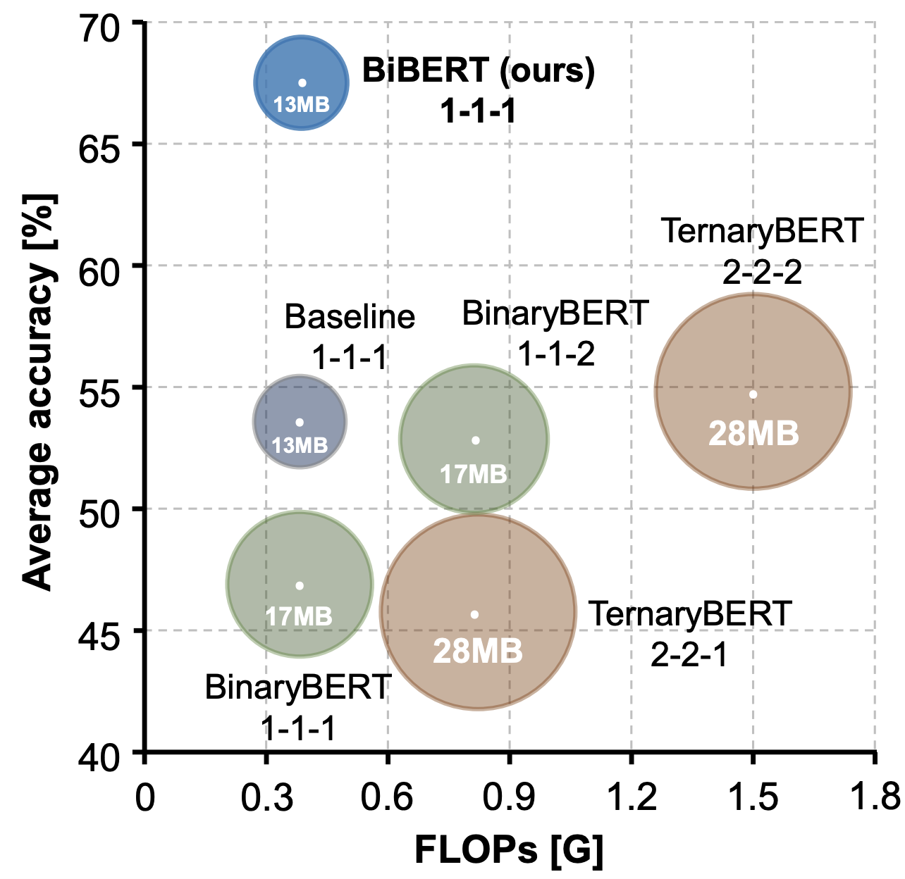
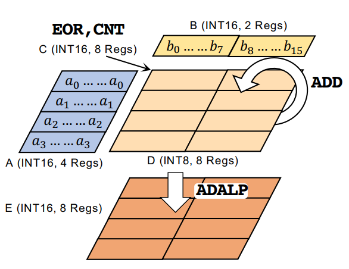
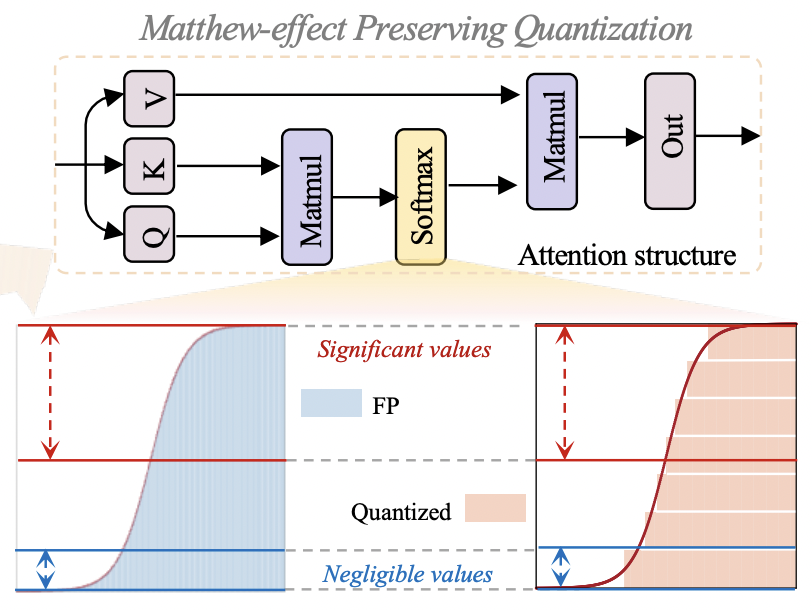
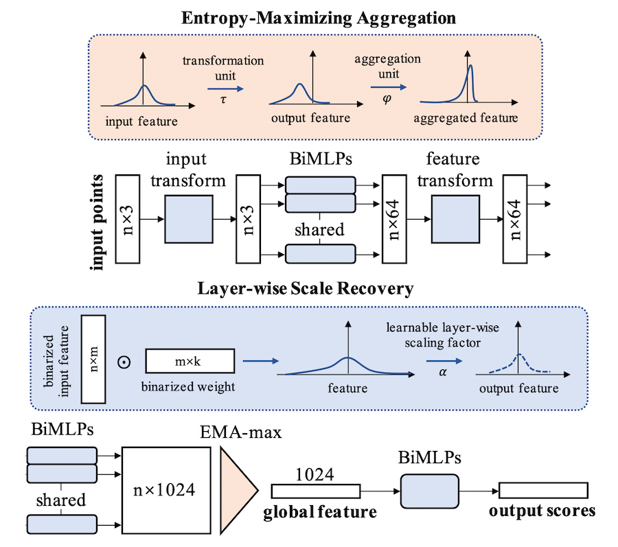
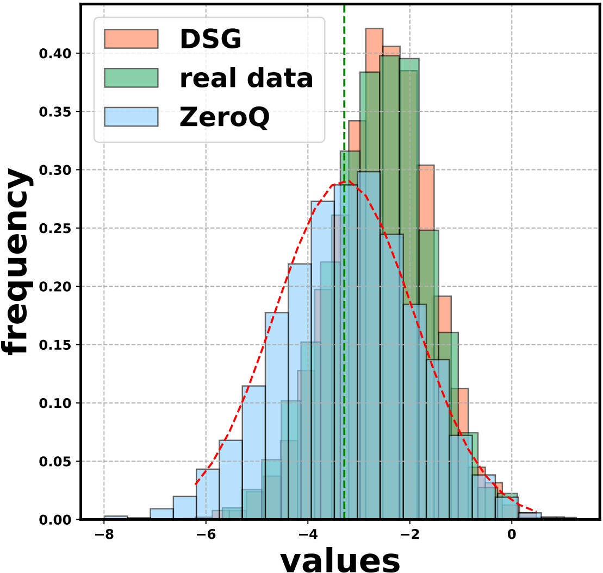
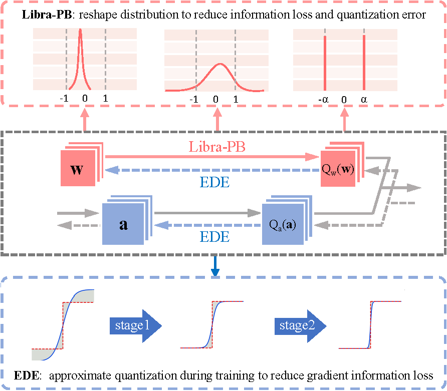
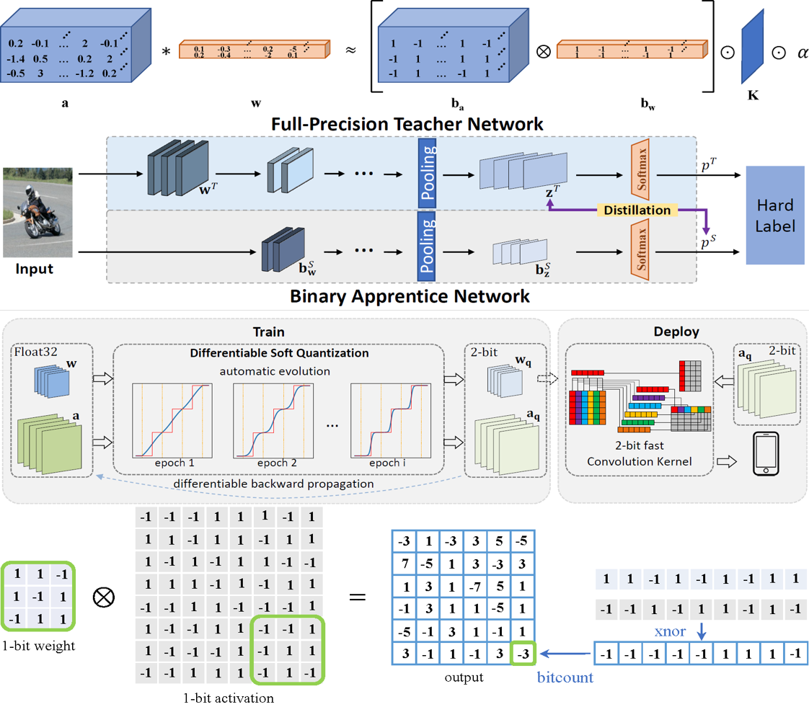

|
Research
I'm interested in network binarization and quantization.
And my research goal is to enable state-of-the-art neural network models to be deployed on resource-limited hardware,
including the compression for different neural architectures,
and the flexible deployment on various hardware.
|
| Recent News
[2022.07.12] I obtain the China Scholarship Council (CSC) scholarship.
[2022.06.29] One co-authored paper for ViT quantization is accepted by ACM MM 2022.
[2022.06.10] I obtain the Beihang Top 10 PhD Students Award!
[2022.05.18] Our BiBERT (ICLR'21) integrated into Baidu's open deep learning platform PaddlePaddle.
[2022.04.21] One first-authored paper for FSMN binarization is accepted by IJCAI 2022.
[2022.03.16] Our survey paper for binary neural networks is selected to ESI Highly Cited Papers.
[2022.03.02] One co-authored paper for physical world robustness is accepted by CVPR 2022.
[2022.01.21] One first-authored paper for BERT binarization is accepted by ICLR 2022.
[2021.10.13] I join Bytedance AI Lab as an research intern.
[2021.09.27] Our BiPointNet (ICLR'21) obtain the Most Popular Paper in Beijing Area.
[2021.09.20] I obtain China National Scholarship (the 2nd time).
[2021.07.23] One co-authored paper for object detection is accepted by ICCV 2021.
[2021.05.17] I obtain Beihang-Huawei Scholarship.
[2021.03.01] One co-authored oral paper for data-free quantization is accepted by CVPR 2021.
[2021.01.13] One first-authored paper for PointNet binarization is accepted by ICLR 2021.
[2020.09.20] I obtain China National Scholarship.
[2020.09.18] I release our open source project "Awesome Model Quantization".
[2020.06.23] I join Tencent WXG as an research intern.
[2020.04.14] I am invited to present our IR-Net and survey paper at JD.com, Inc. Here are the Slides.
[2020.02.28] One first-authored paper for model binarization is accepted by CVPR 2020.
[2020.02.27] One co-authored paper for video hashing is accepted by TMM.
[2020.02.20] One first-authored survey paper for binary neural networks is accepted by PR.
[2018.11.07] I join MSRA as an research intern.
|
| Recent Events
[Workshop@VALSE2022] I am co-organizing the student workshop at VALSE 2022.
|
|  |
BiBERT: Accurate Fully Binarized BERT
[PDF]
Haotong Qin, Yifu Ding, Mingyuan Zhang, Qinghua Yan, Aishan Liu, Qingqing Dang, Ziwei Liu, Xianglong Liu
International Conference on Learning Representations (ICLR), 2022
arXiv /
News:
(量子位,
百度) /
Torch,
PaddlePaddle
In this paper, we propose BiBERT, an accurate fully binarized BERT, to eliminate the performance bottlenecks.
BiBERT introduces an efficient Bi-Attention structure and a DMD scheme, which yields impressive 59.2x and 31.2x saving on FLOPs and model size.
|
|  |
BiFSMN: Binary Neural Network for Keyword Spotting
[PDF]
Haotong Qin, Xudong Ma, Yifu Ding, Xiaoyang Li, Yang Zhang, Yao Tian, Zejun Ma, Jie Luo, Xianglong Liu
International Joint Conference on Artificial Intelligence (IJCAI), 2022
arXiv /
News:
(机器之心,
PaperWeekly)
In this paper, we present BiFSMN, an accurate and extreme-efficient binary network for KWS,
outperforming existing methods on various KWS datasets and achieving impressive 22.3x speedup and 15.5x storage-saving on edge hardware.
|
|  |
Towards Accurate Post-Training Quantizationfor Vision Transformer
[PDF]
Yifu Ding, Haotong Qin, Qinghua Yan, Zhenhua Chai, Junjie Liu, Xiaolin Wei, Xianglong Liu
ACM Multimedia (ACM MM), 2022
arXiv
We propose a novel Accurate Post-training Quantization framework for Vision Transformer, namely APQ-ViT,
which surpasses the existing post-training quantization methods by convincing margins, especially in lower bit settings.
|
|  |
BiPointNet: Binary Neural Network for Point Clouds
[PDF]
Haotong Qin, Zhongang Cai, Mingyuan Zhang, Yifu Ding, Haiyu Zhao, Shuai Yi, Xianglong Liu, Hao Su
International Conference on Learning Representations (ICLR), 2021
arXiv /
Project /
News:
(量子位,
商汤学术) /
Torch
2021 The Most Popular Papers in Beijing Area (Field: Graphic and Image)
We presented BiPointNet, the first model binarization approach for efficient deep learning on point clouds.
BiPointNet gave an impressive 14.7x speedup and 18.9x storage saving on real-world resource-constrained devices.
|
|  |
Diversifying Sample Generation for Accurate Data-Free Quantization
[PDF]
Xiangguo Zhang*, Haotong Qin*, Yifu Ding, Ruihao Gong, Qinghua Yan, Renshuai Tao, Yuhang Li, Fengwei Yu, Xianglong Liu
IEEE Conference on Computer Vision and Pattern Recognition (CVPR), 2021
Oral presentation, Acceptance Rate 4.7%
arXiv /
News:
(量子位,
商汤学术)
We proposed Diverse Sample Generation (DSG) scheme to mitigate the adverse effects caused by homogenization in data-free quantization,
which obtained significant improvements over various networks and quantization methods.
|
|  |
Forward and Backward Information Retention for Accurate Binary Neural Networks
[PDF]
Haotong Qin, Ruihao Gong, Xianglong Liu, Mingzhu Shen, Ziran Wei, Fengwei Yu, Jingkuan Song
IEEE Conference on Computer Vision and Pattern Recognition (CVPR), 2020
arXiv /
News:
(机器之心,
商汤学术,
CVer,
AI科技大本营) /
Torch
We proposed a novel Information Retention Network (IR-Net) to retain the information that consists in the forward activations and backward gradients,
and we were the first to implement and report 1-bit BNN speed on edge devices.
|
|  |
Binary Neural Networks: A Survey
[PDF]
Haotong Qin, Ruihao Gong, Xianglong Liu, Xiao Bai, Jingkuan Song, Nicu Sebe
Pattern Recognition (PR), 2020
arXiv /
News:
(PaperWeekly,
机器之心) /
Torch
ESI Highly Cited Papers (2022)
We presented a comprehensive survey of BNNs.
We also investigated other practical aspects of binary neural networks such as the hardware-friendly design and training tricks.
Then, we gave the evaluation and discussions on different tasks.
Finally, the challenges may be faced in future research were prospected.
|
| Main Honors and Awards
[2022.07] China CSC Scholarship (5500 people nationwide)
[2022.06] Beihang Top 10 PhD Students Award (10 people in Beihang University)
[2022.05] Beihang Youth May 4th Medal Nomination (Top Honor for Beihang Young People)
[2021.09] The Most Popular Paper in Beijing Area (Field: Graphic and Image)
[2021.09] China National Scholarship (the 2nd time)
[2021.05] Huawei Scholarship (Top 1%)
[2020.09] China National Scholarship (Top 1%)
[2019.10] Tencent Rhino-Bird Elite (51 people worldwide)
[2019.10] Shen Yuan Honors College at Beihang University (Top 1%)
[2019.04] ICPC China National Invitational Contest (Gold Medal)
[2018.03] ACM-ICPC Chinese Collegiate Programming Contest (Gold Medal)
[2016.07] International Concert of Chinese Folk Music (Gold Medal)
|
| Academic Services
Organizer of Workshop: PRCV 2021, AAAI 2021, CVPR 2022, VALSE 2022.
Reviewer of Journals: T-PAMI, T-IP, T-NNLS, T-MM, Pattern Recognition, JVCI, JCST, etc.
Program Committee of Conferences: ACM MM 2021/2022, IJCAI 2022, etc.
|
| Talks and Teaching
[2022.06] I am invited to host the VALSE Student Webinar & Panel namely "When CV meets NLP".
[Media]
[2022.01] I am invited to host the VALSE Student Webinar about conference and journal rebuttal.
[Media]
[2021.07] I am invited to talk about Network Quantization in Multiple Scenarios at
J Ventures (将门创投). [Video]
[2021.06] I am invited to talk about Data-free Quantization at
Zhidx (智东西公开课). [Video]
[2021.05] I am invited to present our DSG (CVPR 2021 oral) at
MSRA Tech Talk. [Slides]
[2020.04] I am invited to present our IR-Net (CVPR 2020) and survey paper at
JD AI Research. [Slides]
[Fall 2020] I am the teaching Assistant in Machine Learning (Beihang University).
|
|
About Me
In my free time, I like playing Chinese folk music, especially string music (Erhu, Zhonghu, etc.).
In fact, I am almost a professional Erhu performer.
I have studied Erhu supervised by Prof. Zaili Tian, Prof. Yang Gao, and Prof. Qingfu Zhu.
I was the vice-president of the Beihang Folk Music Orchestra, here are some of the performance videos of our orchestra [Tencent Video][Bilibili].
|
|